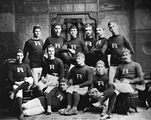
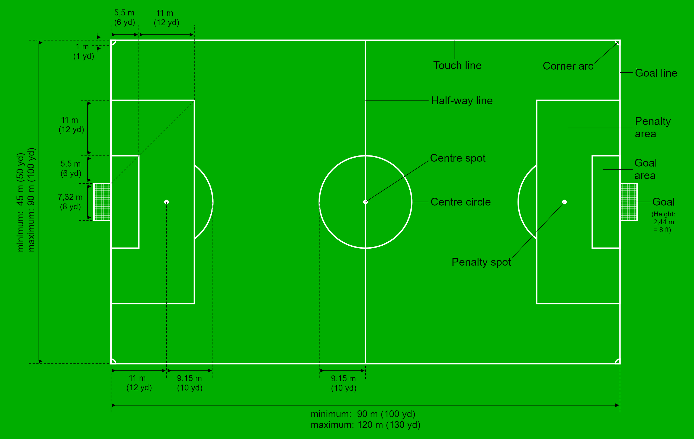
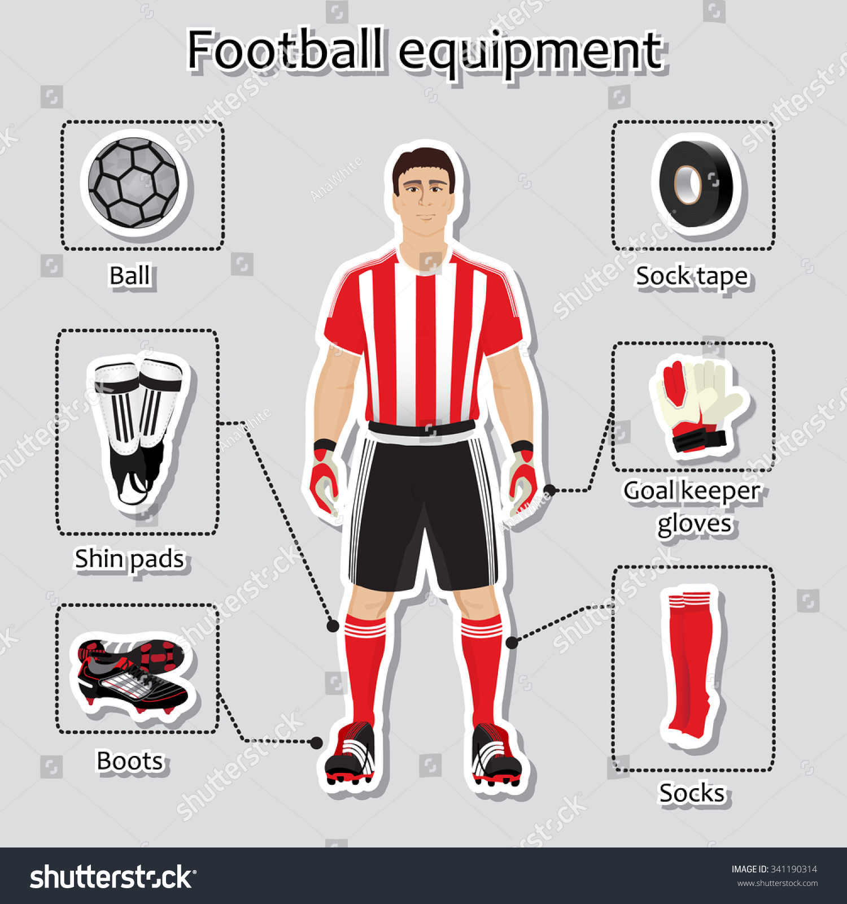
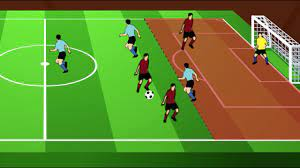

FOOTBALL
Football is a family of team sports that involve, to varying degrees, kicking a ball to score a goal. Unqualified, the word football normally means the form of football that is the most popular where the word is used. Sports commonly called football include association football (known as soccer in North America, Ireland and Australia); gridiron football (specifically American football or Canadian football); Australian rules football; rugby union and rugby league; and Gaelic football. These various forms of football share to varying extents common origins and are known as "football codes".
There are a number of references to traditional, ancient, or prehistoric ball games played in many different parts of the world. Contemporary codes of football can be traced back to the codification of these games at English public schools during the 19th century. The expansion and cultural influence of the British Empire allowed these rules of football to spread to areas of British influence outside the directly controlled Empire. By the end of the 19th century, distinct regional codes were already developing: Gaelic football, for example, deliberately incorporated the rules of local traditional football games in order to maintain their heritage. In 1888, The Football League was founded in England, becoming the first of many professional football associations. During the 20th century, several of the various kinds of football grew to become some of the most popular team sports in the world.
Modern football originated in Britain in the 19th century. Since before medieval times, “folk football” games had been played in towns and villages according to local customs and with a minimum of rules. Industrialization and urbanization, which reduced the amount of leisure time and space available to the working class, combined with a history of legal prohibitions against particularly violent and destructive forms of folk football to undermine the game’s status from the early 19th century onward. However, football was taken up as a winter game between residence houses at public (independent) schools such as Winchester, Charterhouse, and Eton. Each school had its own rules; some allowed limited handling of the ball and others did not. The variance in rules made it difficult for public schoolboys entering university to continue playing except with former schoolmates. As early as 1843 an attempt to standardize and codify the rules of play was made at the University of Cambridge, whose students joined most public schools in 1848 in adopting these “Cambridge rules,” which were further spread by Cambridge graduates who formed football clubs. In 1863 a series of meetings involving clubs from metropolitan London and surrounding counties produced the printed rules of football, which prohibited the carrying of the ball. Thus, the “handling” game of rugby remained outside the newly formed Football Association (FA). Indeed, by 1870 all handling of the ball except by the goalkeeper was prohibited by the FA.
The new rules were not universally accepted in Britain, however; many clubs retained their own rules, especially in and around Sheffield. Although this northern English city was the home of the first provincial club to join the FA, in 1867 it also gave birth to the Sheffield Football Association, the forerunner of later county associations. Sheffield and London clubs played two matches against each other in 1866, and a year later a match pitting a club from Middlesex against one from Kent and Surrey was played under the revised rules. In 1871 15 FA clubs accepted an invitation to enter a cup competition and to contribute to the purchase of a trophy. By 1877 the associations of Great Britain had agreed upon a uniform code, 43 clubs were in competition, and the London clubs’ initial dominance had diminished.
By the early 20th century, football had spread across Europe, but it was in need of international organization. A solution was found in 1904, when representatives from the football associations of Belgium, Denmark, France, the Netherlands, Spain, Sweden, and Switzerland founded the Fédération Internationale de Football Association (FIFA).
Although Englishman Daniel Woolfall was elected FIFA president in 1906 and all of the home nations (England, Scotland, Ireland, and Wales) were admitted as members by 1911, British football associations were disdainful of the new body. FIFA members accepted British control over the rules of football via the International Board, which had been established by the home nations in 1882. Nevertheless, in 1920 the British associations resigned their FIFA memberships after failing to persuade other members that Germany, Austria, and Hungary should be expelled following World War I. The British associations rejoined FIFA in 1924 but soon after insisted upon a very rigid definition of amateurism, notably for Olympic football. Other nations again failed to follow their lead, and the British resigned once more in 1928, remaining outside FIFA until 1946. When FIFA established the World Cup championship, British insouciance toward the international game continued. Without membership in FIFA, the British national teams were not invited to the first three competitions (1930, 1934, and 1938). For the next competition, held in 1950, FIFA ruled that the two best finishers in the British home nations tournament would qualify for World Cup play; England won, but Scotland (which finished second) chose not to compete for the World Cup.
Despite sometimes fractious international relations, football continued to rise in popularity. It made its official Olympic debut at the London Games in 1908, and it has since been played in each of the Summer Games (except for the 1932 Games in Los Angeles). FIFA also grew steadily—especially in the latter half of the 20th century, when it strengthened its standing as the game’s global authority and regulator of competition. Guinea became FIFA’s 100th member in 1961; at the turn of the 21st century, more than 200 nations were registered FIFA members, which is more than the number of countries that belong to the United Nations.
The World Cup finals remain football’s premier tournament, but other important tournaments have emerged under FIFA guidance. Two different tournaments for young players began in 1977 and 1985, and these became, respectively, the World Youth Championship (for those 20 years old and younger) and the Under-17 World Championship. Futsal, the world indoor five-a-side championship, started in 1989. Two years later the first Women’s World Cup was played in China. In 1992 FIFA opened the Olympic football tournament to players aged under 23 years, and four years later the first women’s Olympic football tournament was held. The World Club Championship debuted in Brazil in 2000. The Under-19 Women’s World Championship was inaugurated in 2002.
FIFA membership is open to all national associations. They must accept FIFA’s authority, observe the laws of football, and possess a suitable football infrastructure (i.e., facilities and internal organization). FIFA statutes require members to form continental confederations. The first of these, the Confederación Sudamericana de Fútbol (commonly known as CONMEBOL), was founded in South America in 1916. In 1954 the Union of European Football Associations (UEFA) and the Asian Football Confederation (AFC) were established. Africa’s governing body, the Confédération Africaine de Football (CAF), was founded in 1957. The Confederation of North, Central American and Caribbean Association Football (CONCACAF) followed four years later. The Oceania Football Confederation (OFC) appeared in 1966. These confederations may organize their own club, international, and youth tournaments, elect representatives to FIFA’s Executive Committee, and promote football in their specific continents as they see fit. In turn, all football players, agents, leagues, national associations, and confederations must recognize the authority of FIFA’s Arbitration Tribunal for Football, which effectively functions as football’s supreme court in serious disputes.
Until the early 1970s, control of FIFA (and thus of world football) was firmly in the hands of northern Europeans. Under the presidencies of the Englishmen Arthur Drewry (1955–61) and Stanley Rous (1961–74), FIFA adopted a rather conservative patrician relationship to the national and continental bodies. It survived on modest income from the World Cup finals, and relatively little was done to promote football in developing countries or to explore the game’s business potential within the West’s postwar economic boom. FIFA’s leadership was more concerned with matters of regulation, such as confirming amateur status for Olympic competition or banning those associated with illegal transfers of players with existing contracts. For example, Colombia (1951–54) and Australia (1960–63) were suspended temporarily from FIFA after permitting clubs to recruit players who had broken contracts elsewhere in the world.
Growing African and Asian membership within FIFA undermined European control. In 1974 Brazilian João Havelange was elected president, gaining large support from developing nations. Under Havelange, FIFA was transformed from an international gentlemen’s club into a global corporation: billion-dollar television deals and partnerships with major transnational corporations were established during the 1980s and ’90s. While some earnings were reinvested through FIFA development projects—primarily in Asia, Africa, and Central America—the biggest political reward for developing countries has been the expansion of the World Cup finals to include more countries from outside Europe and South America.
Greater professionalization of sports also forced FIFA to intercede in new areas as a governing body and competition regulator. The use of performance-enhancing drugs by teams and individual players had been suspected since at least the 1930s; FIFA introduced drug tests in 1966, and occasionally drug users were uncovered, such as Willie Johnston of Scotland at the 1978 World Cup finals. But FIFA regulations were tightened in the 1980s after the sharp rise in offenses among Olympic athletes, the appearance of new drugs such as the steroid nandrolone, and the use of drugs by stars such as Argentina’s Diego Maradona in 1994. While FIFA has authorized lengthy worldwide bans of players who fail drug tests, discrepancies remain between nations and confederations over the intensity of testing and the legal status of specific drugs.
As the sport moved into the 21st century, FIFA came under pressure to respond to some of the major consequences of globalization for international football. During the corrupt tenure of Switzerland’s Sepp Blatter as president from 1998 to 2015, the political bargaining and wrangling among world football’s officials gained greater media and public attention. Direct conflicts of interest among football’s various groups have also arisen: players, agents, television networks, competition sponsors, clubs, national bodies, continental associations, and FIFA all have divergent views regarding the staging of football tournaments and the distribution of football’s income. Regulation of player representatives and transfers is also problematic. In UEFA countries, players move freely when not under contract. On other continents, notably Africa and Central and South America, players tend to be tied into long-term contracts with clubs that can control their entire careers. FIFA now requires all agents to be licensed and to pass written examinations held by national associations, but there is little global consistency regarding the control of agent powers. In Europe, agents have played a key role in promoting wage inflation and higher player mobility. In Latin America, players are often partially “owned” by agents who may decide on whether transfers proceed. In parts of Africa, some European agents have been compared to slave traders in the way that they exercise authoritarian control over players and profit hugely from transfer fees to Western leagues with little thought for their clients’ well-being. In this way, the ever-widening inequalities between developed and developing nations are reflected in the uneven growth and variable regulations of world football.
The aim of football is to score more goals then your opponent in a 90 minute playing time frame. The match is split up into two halves of 45 minutes. After the first 45 minutes players will take a 15 minute rest period called half time. The second 45 minutes will resume and any time deemed fit to be added on by the referee (injury time) will be accordingly.
Each team consists of 11 players. These are made up of one goalkeeper and ten outfield players. The pitch dimensions vary from each ground but are roughly 120 yards long and 75 yards wide. On each pitch you will have a 6 yard box next to the goal mouth, an 18 yard box surrounding the 6 yard box and a centre circle. Each half of the pitch must be a mirror image of the other in terms of dimensions.
Essentially the equipment that is needed for a soccer match is pitch and a football. Additionally players can be found wearing studded football boots, shin pads and matching strips. The goalkeepers will additionally wear padded gloves as they are the only players allowed to handle the ball. Each team will have a designated captain.
To win you have to score more goals than that of your opponents. If the scores are level after 90 minutes then the game will end as a draw apart from in cup games where the game can go to extra time and even a penalty shootout to decide the winner. Players must use their feet to kick the ball and are prohibited to use their hands apart from goalkeepers who can use any part of their body within the 18 yard box (of which more can be found out in the next section).
A match consists of two 45 minutes halves with a 15 minute rest period in between. Each team can have a minimum off 11 players (including 1 goalkeeper who is the only player allowed to handle the ball within the 18 yard box) and a minimum of 7 players are needed to constitute a match. The field must be made of either artificial or natural grass. The size of pitches is allowed to vary but must be within 100-130 yards long and 50-100 yards wide. The pitch must also be marked with a rectangular shape around the outside showing out of bounds, two six yard boxes, two 18 yard boxes and a centre circle. A spot for a penalty placed 12 yards out of both goals and centre circle must also be visible. The ball must have a circumference of 58-61cm and be of a circular shape. Each team can name up to 7 substitute players. Substitutions can be made at any time of the match with each team being able to make a maximum of 3 substitutions per side. In the event of all three substitutes being made and a player having to leave the field for injury the team will be forced to play without a replacement for that player. Each game must include one referee and two assistant referee’s (linesmen). It’s the job of the referee to act as time keeper and make any decisions which may need to be made such as fouls, free kicks, throw ins, penalties and added on time at the end of each half. The referee may consult the assistant referees at any time in the match regarding a decision. It’s the assistant referee’s job to spot offside’s in the match (see below), throw ins for either team and also assist the referee in all decision making processes where appropriate. If the game needs to head to extra time as a result of both teams being level in a match then 30 minutes will be added in the form of two 15 minute halves after the allotted 90 minutes. If teams are still level after extra time then a penalty shootout must take place. The whole ball must cross the goal line for it to constitute as a goal. For fouls committed a player could receive either a yellow or red card depending on the severity of the foul; this comes down to the referee’s discretion. The yellow is a warning and a red card is a dismissal of that player. Two yellow cards will equal one red. Once a player is sent off then they cannot be replaced. If a ball goes out of play off an opponent in either of the side lines then it is given as a throw in. If it goes out of play off an attacking player on the base line then it is a goal kick. If it comes off a defending player it is a corner kick.
Offside can be called when an attacking player is in front of the last defender when the pass is played through to them. The offside area is designed to discourage players from simply hanging around the opponent’s goal waiting for a pass. To be onside they must be placed behind the last defender when the ball is played to them. If the player is in front of that last defender then he is deemed to be offside and free kick to the defending team will be called. A player cannot be caught offside in their own half. The goalkeeper does not count as a defender. If the ball is played backwards and the player is in front of the last defender then he is deemed to be not offside.